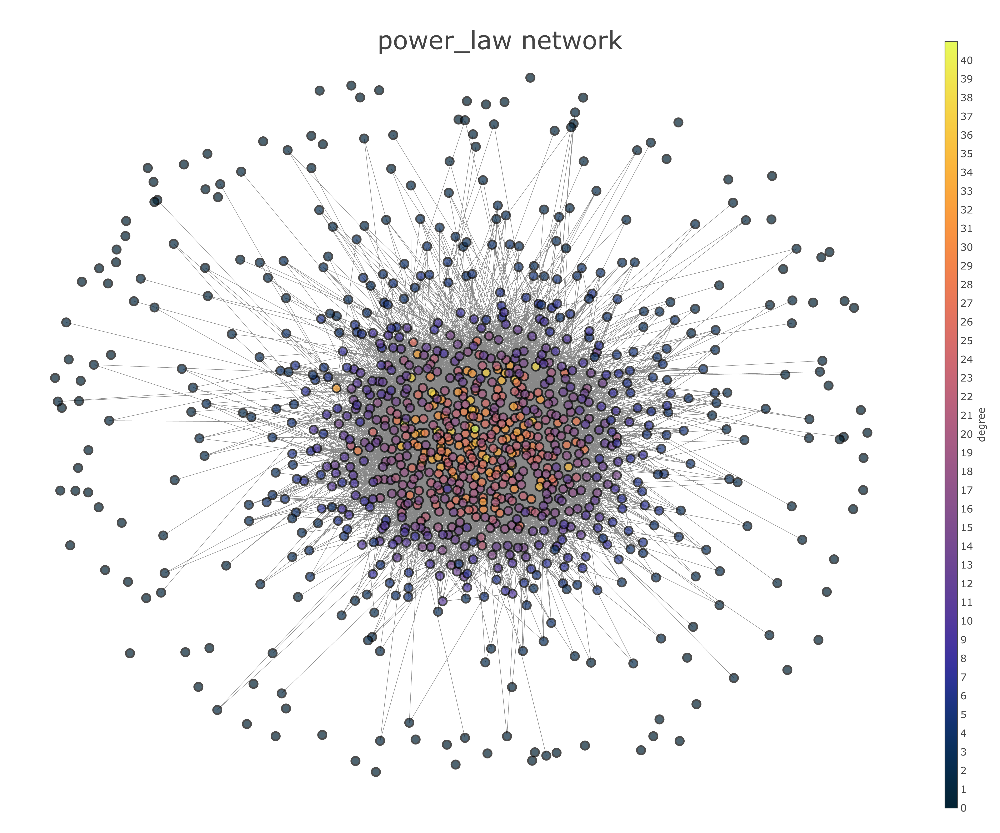

Network Structure¶
The study includes three types of networks: random, community-structured, and scale-free.
The population size is 5,000 individuals.
Assumed the same average number of degree across types of network in the simulation time horizon.
Time step is bi-weekly time step.
- Simulate the network and disease transmission dynamics at two levels of disease prevalence: 5% and 20%.
The disease prevalence is the steady state prevalence given the standard partner management (partner notification).
Different levels of disease prevalence required different time horizon and analysis time:
Prevalence |
Timehorizon |
Strategy implemented in the burn-in period |
The initial time step a strategy is implemented |
Analysis window |
|---|---|---|---|---|
|
50 years |
Annual screening alone |
At the 30th year |
Last 10 year of the simulation |
|
20 years |
Annual screening alone |
At the 8th year |
Last 10 year of the simulation |
Random networks¶

Community-structured networks¶

Scale-free networks¶
